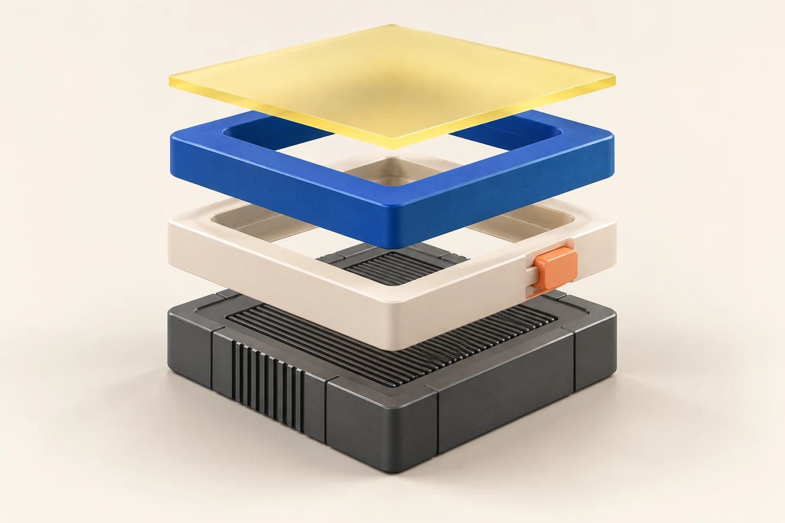

검증 기록을 연결하는 자리
자료 입력 전아래 표는 검증의 종류를 보여주는 템플릿입니다. 실제 실행 결과를 뜻하지 않습니다.
| 검증 대상 | 확인할 조건 | 근거 |
|---|---|---|
| 계약 | 서버·SDK 불일치 시 실행 전에 거부 | 명령·결과 입력 전 |
| 권한 | 허용 주체와 거부 주체 모두 검사 | 명령·결과 입력 전 |
| 재시도 | 불확실한 응답 뒤 중복 처리 여부 | 명령·결과 입력 전 |
필수 메타: 기준 커밋 · 실행일 · OS/DB/SDK · 명령 · 예상 결과 · 실제 결과 · 아티팩트.
01
사례의 범위, 사용자, 기존 경로를 먼저 설명합니다. 구체적인 화면이나 변경 사례를 출발점으로 삼습니다.
하나의 변경이 여러 계약을 건드린다.
서술 예시 · 실제 사례의 트리거와 관찰로 바꾸세요.
그 연결을 더 분명하게 만들 수 있을까?
어떤 변경이 어느 파일과 책임으로 퍼졌는지 코드나 화면을 연결합니다.
줄일 반복, 보존할 정책, 확인할 실패 경로를 작업 전에 정의합니다.
02
고른 구조의 장점과 대가를 보여주면, 프로젝트의 판단을 읽을 수 있습니다.
선언과 실행 사이의 역할을 나누고 정책은 서버에 유지합니다.

03
실행 결과와 추정 효과를 섞지 않습니다. 수치보다 재현 가능한 조건을 먼저 둡니다.
아래 표는 검증의 종류를 보여주는 템플릿입니다. 실제 실행 결과를 뜻하지 않습니다.
| 검증 대상 | 확인할 조건 | 근거 |
|---|---|---|
| 계약 | 서버·SDK 불일치 시 실행 전에 거부 | 명령·결과 입력 전 |
| 권한 | 허용 주체와 거부 주체 모두 검사 | 명령·결과 입력 전 |
| 재시도 | 불확실한 응답 뒤 중복 처리 여부 | 명령·결과 입력 전 |
필수 메타: 기준 커밋 · 실행일 · OS/DB/SDK · 명령 · 예상 결과 · 실제 결과 · 아티팩트.
미측정
비교 대상, 같은 workload, 표본 수와 반복 횟수가 있어야 수치를 넣습니다.
운영 IdP와 TLS, 다른 OS, 대형 데이터의 변경과 복구 등 실제 대상 환경을 적습니다.
이 목록도 프로젝트의 최신 검증 문서로 교체하세요.
04
회고는 감상보다 다음 판단을 바꾸는 관찰로 끝냅니다.
어떤 관찰이 선택을 지지했는지 근거를 연결합니다.
어떤 비용이나 실패가 나타나면 설계를 다시 볼지 적습니다.
열린 질문 하나와 검증할 방법을 남깁니다.
실제 프로젝트에서는 저장소, 재현 절차, 데모 중 가장 유용한 다음 행동을 연결합니다.